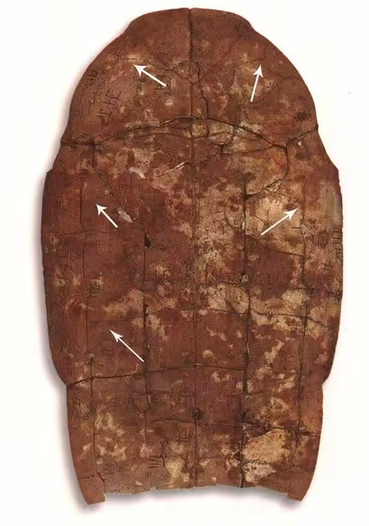
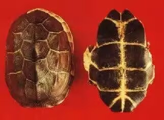
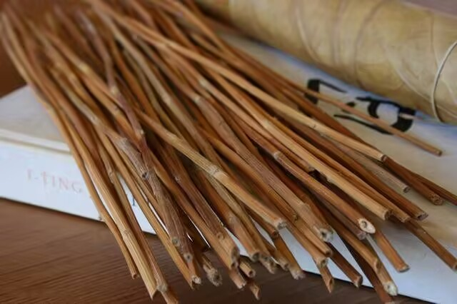
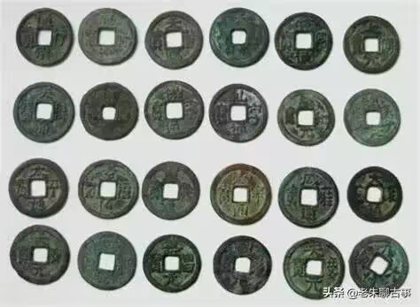
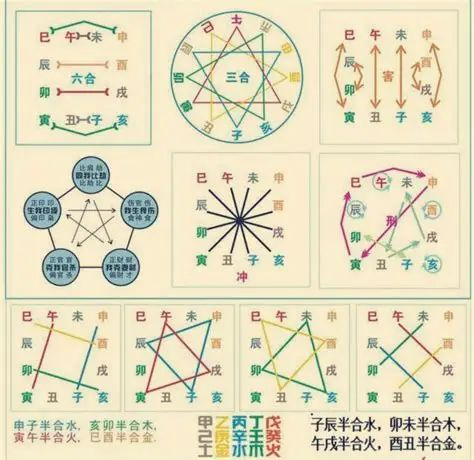
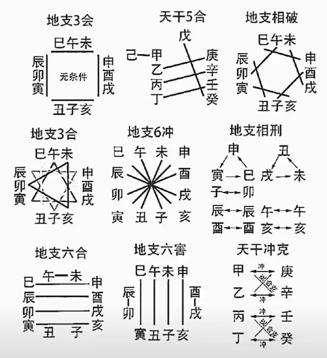

一、根本认知：易为物理，变为体，衡为用
易不是玄学，是物理——是事物运行的理，是气机变化的学。《周易》以变易为核心，孔颖达《周易正义》阐发“变易”之义，张载亦言“造化所成”皆在气机流转之中。
《阴符经》云：“愚人以天地文理圣，我以时物文理哲。”五行不是五种冷硬物质，而是五种正在发生的变化趋势。平衡是在运动中达成的自洽，绝非强求的静止。
| 气机体用 | 体为收敛致密，用为从革裁度。非金属铁块，乃一切由弥散趋向凝聚之变易。 |
|---|---|
| 动态走向 | 由散归聚、由热趋清、由虚向实、结晶固化（收而不是散，流中寓止）。 |
| 物理映射 | 物质相变结晶、热容降低、密度提升；如熔融玻璃冷却成器、如气温骤降结露为霜。 |
| 生克博弈 | 受火煅炼以去顽钝（火克金）；受土承载孕育而生成（土生金）；顺生津水（金生水）；制约狂木（金克木）。 |
【深层生克动力学机制】：
金本克木，若局中水路畅通，金专注于生水，水进而滋润生木，此即“金贪生水而忘克木”，克性化为长养之生力，干戈化玉帛。
贪生忘克之前提：生路必须畅通无阻！若生路被堵（局中无水、或水被燥土壅塞隔阻、或水被丁火合绊合去），金之气机无处泄秀生发，必将掉头直伐震木，造成刚折之灾。
“生方怕动，旺方怕冲。五行得中和者多福，偏枯者多灾。造化流通，百病不作；气机阻滞，百弊丛生。”
乙木双透火极旺 · 丑土火烤 · 金弱水蒸之局
断在 火 → 土 → 金 → 水 这一段！火旺成势，若按俗说“五行缺什么补什么”去生硬补金水，弱金入烈火立化铁水，弱水浇烈火反激其怒。唯当使用【通关思维】！
《滴天髓》云：“火金而要土……此关若通也，相邀入洞房。”通关不是补缺，是通堵——找断点！
为何须用辰土？ 辰为水库，内蓄癸水。若取燥土反增火势；取辰湿土，一则泄滔天之烈火（火生湿土），二则培厚土以生金（土生金），三则蓄水护水（辰为水库养金涵水），四则全盘闭环一气周流！
易不是玄学，是物理——是事物运行的理，是气机变化的学。《周易》以变易为核心，孔颖达《周易正义》阐发“变易”之义，张载亦言“造化所成”皆在气机流转之中。
《阴符经》云：“愚人以天地文理圣，我以时物文理哲。”五行不是五种冷硬物质，而是五种正在发生的变化趋势。平衡是在运动中达成的自洽，绝非强求的静止。
残火佯谬： 传统常误以为烧陶后陶器内“残留火气”需养壶去火，实为器化偏执。火是能量释放与氧化反应，冷却即散，器内绝无“残留之火”。
真相： 火生土，非火化为土，乃火的性质作用于土，去水重结晶，改变了土的性质。陶器成，火性已散，土性已新，土得金用（遇水不溶不软）！
生克是基础，冲合是能量的放大器与转向器。优先级为：三合 ＞ 六合 ＞ 冲 ＞ 生克；紧贴 ＞ 隔位 ＞ 遥隔。
合能解冲，冲能破合。忌神喜合，合住则不能肆虐；喜神忌合，合住则无法发力。合绊为牵制，合化为变性。
命是出厂设置，运是实时调参。命局给偏性，运给调整空间。体质与后天作为是博弈的实时结果，绝非命局的静态投影。





